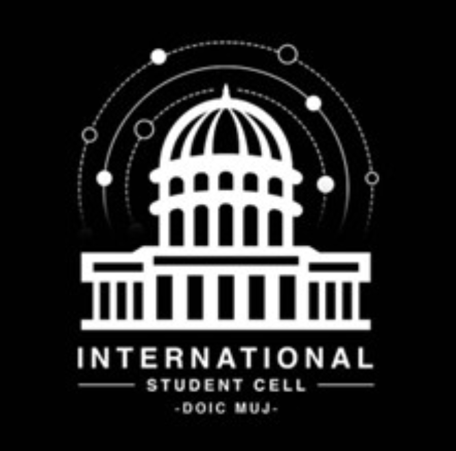

Discover
Find academic, professional and cultural possibilities beyond campus.

INTERNATIONALNew places. Different perspectives. Endless possibilities. Step beyond borders with the International Student Cell at MUJ.
Nurturing global citizens.
ISC is the dedicated cell of the Directorate of International Collaborations (DoIC) at Manipal University Jaipur.
ISC AT A GLANCE
YOUR GATEWAY BEYOND CAMPUS
ISC raises awareness of global initiatives and builds international collaborations. It supports student and semester exchanges, global internships, collaborative research, cultural immersion, and summer and winter schools. Incoming international students can join programs like Explore India.
WHAT YOU GAIN
Broader academic and professional horizons, a real appreciation of diversity, and the confidence to think critically about global issues and drive positive change. At MUJ, we believe education without borders is essential for the 21st century.
PUTTING MUJ ON THE WORLD MAP
ISC raises MUJ's international profile through global networking and partnerships, and encourages every student to see themselves as a global citizen.
OUR KEY OBJECTIVES
Together, these efforts will expand MUJ's global network and strengthen its international reputation.
ISC is more than a cell. It is a catalyst that turns students into global leaders.
Meet DoIC at MUJ ↗Find academic, professional and cultural possibilities beyond campus.
Build meaningful relationships across institutions, cultures and borders.
Develop the confidence and perspective to participate in a connected world.
There’s more than one way to go global.
Choose a card to explore the experience.
Programs, destinations and eligibility vary. Confirm current opportunities with DoIC.
ISC is part of the Directorate of International Collaborations at Manipal University Jaipur. Get to know the people helping students explore a world of opportunities.
View ISC Team at MUJDiscover cultural exchanges, international learning experiences and opportunities to connect. Follow ISC for the latest event announcements and participation details.
See ISC updatesAt ISC, we pride ourselves on having a diverse and dynamic team composed of members from various departments and schools within MUJ. Our collective expertise and unique perspectives drive our mission to foster international collaborations and create global opportunities for MUJ students.
If you are interested in joining ISC or want to know more about our initiatives, please feel free to reach out to our team.